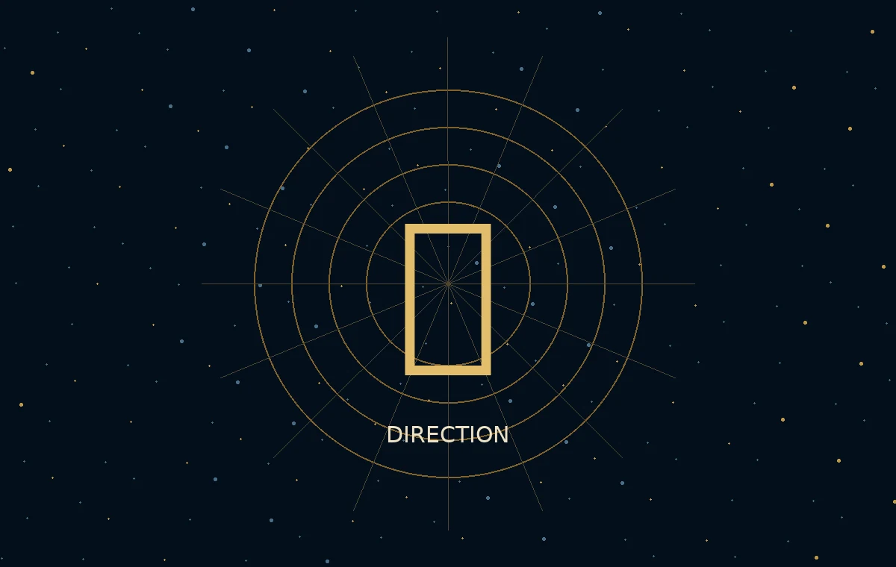

Capacités, coûts, contraintes, lois et discontinuités.
Navigateur Ω
Navigateur de la Singularité GoalOS Ω
L’institution de navigation qui détecte les basculements de frontière, génère des architectures concurrentes, borne l’autorité et ne compose que ce qui réussit.
ConstitutionnelSous contrôle de preuveNeutre quant aux modèlesSécuritaire pour le public
STATIQUE PUBLIC · ACCÈS PROPRIÉTAIRE AGI CLUB
La direction avant le mouvement
Le Navigateur détermine où aller.
Il détecte les changements de frontière, explore des architectures concurrentes, borne les conséquences et ne fait avancer que la direction qui survit à la gouvernance et à la preuve.
DétecterBrancherBornerSélectionner
Le Navigateur ne recommande pas simplement un outil. Il compare des futurs plausibles, expose les hypothèses et constitue la prochaine mission bornée.
✦
Navigateur ΩInstitution de directionArchitectures concurrentes et futurs plausibles.
Autorité, preuve, risque, réversibilité et conditions d’arrêt.
La trajectoire la plus forte qui survit à la preuve et à la gouvernance.
DIRECTION DE FRONTIÈREComparer avant de s’engager
Observer les capacités, coûts, contraintes, lois, goulots et discontinuités avant que le plan courant devienne obsolète.
Planche institutionnelle complète
La boussole de frontière du Navigateur.
Le visuel de recherche original demeure disponible en pleine fidélité. Utilisez la boussole interactive ci-dessus pour comprendre rapidement et la planche ci-dessous pour inspecter les détails.

01
Relation avec le Bureau
Le Navigateur choisit la frontière. Le Bureau préserve l’aptitude institutionnelle.
Navigateur Ω
Détermine où l’institution devrait aller en comparant des futurs plausibles, les changements de régime, les contraintes et les architectures.
Bureau Ω
Teste continuellement si l’institution mérite toujours de suivre cette direction—et la reconstitue lorsque la réalité change.
Limite d’accès
L’institution statique publique utilise un contrôle de propriétaire direct d’AGI Club comme mécanisme conditionnel d’usage et de provenance. Il ne rend pas une source publique confidentielle, ne certifie pas l’identité et ne confère aucune autorité réglementée.